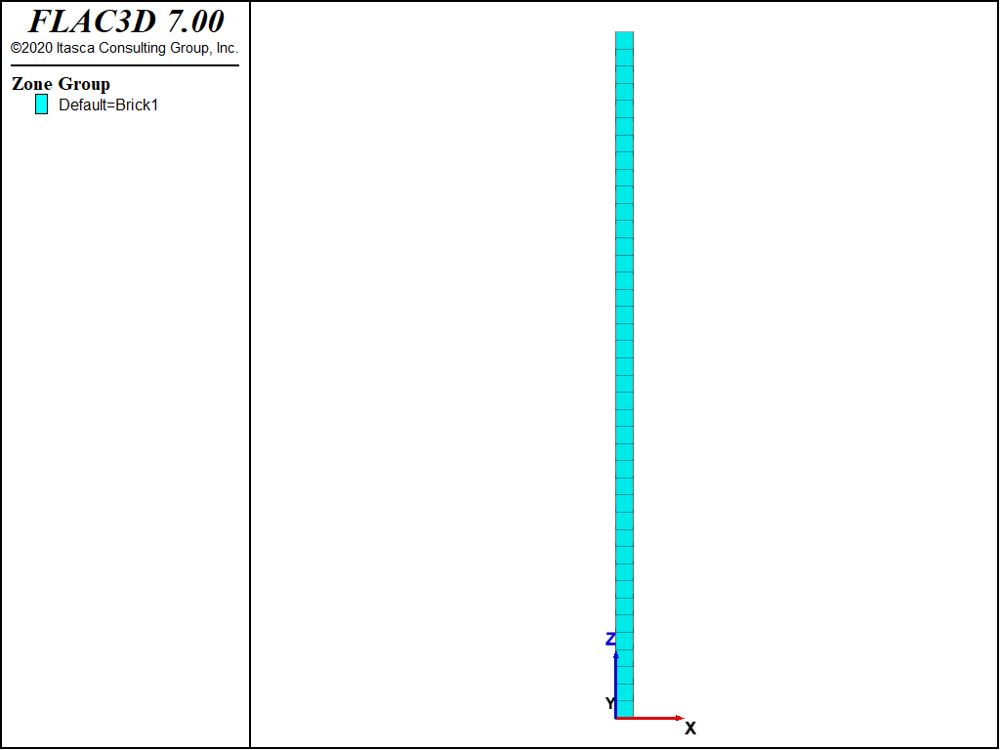
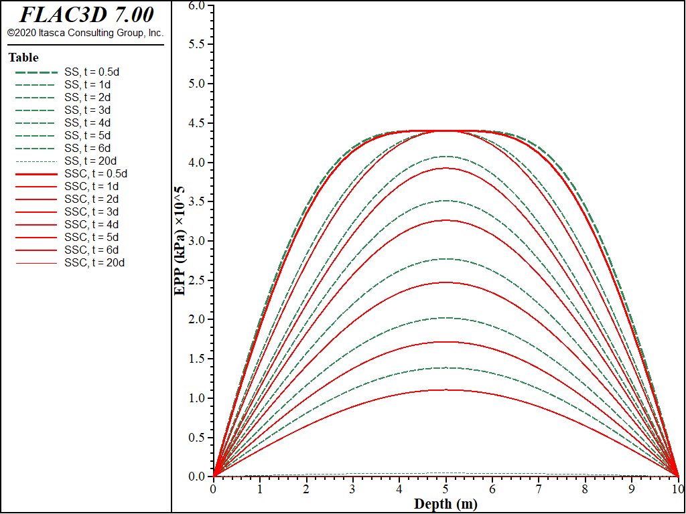
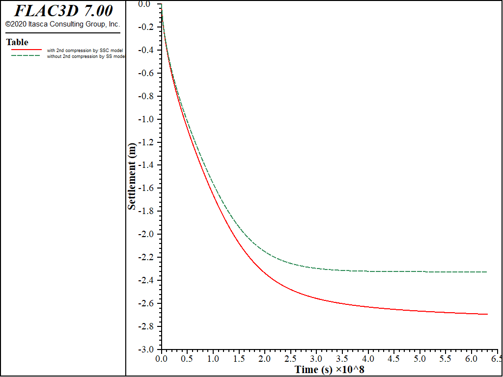

考虑次压缩的一维固结
注意
本示例的项目文件可在 FLAC3D 中查看/运行。[1] 该项目的主数据文件见本示例末尾（main data files）。
厚度 \(H\) = 10 m、水平范围很大的饱和土层位于刚性不透水基座之上。在不排水条件下，于该土层上施加恒定表面荷载 \(p_z\) = 4 × 105 Pa。土骨架为均质软土，分别采用 Soft-Soil-Creep（SSC）模型和 Soft-Soil（SS）模型进行模拟，以检验次压缩效应；为简化起见，假定土层具有均匀的有效竖向应力 \(\sigma'_{v0}\) = 4 × 104 Pa；采用各向同性达西输运定律。所施加的压力最初由流体承担，但随时间推移，流体通过土层表面排出，将荷载传递给土骨架。排水为双向排水。
本示例规定以下参数：
| 土颗粒比重，\(G_s\) | 2.78 |
| 初始孔隙比，\(e_0\) | 2.7 |
| 渗透率（常规），\(k\) | 5 × 10-10 m/s |
| \(C_c\) | 1.0 |
| \(C_s\) | 0.1 |
| 临界状态摩擦 | 30 度 |
| 泊松比 | 0.2 |
| OCR | 1.0 |
| \(K_{nc}\) | 0.5 |
| 水的体积模量，\(K_w\) | 2 × 108 Pa |
对于 SSC 模型，另有两个参数：参考时间 \(\tau\) = 2200 秒和 \(C_\alpha\) = 0.04。分析两种方案——方案 A：考虑次压缩（蠕变），通过对土骨架采用 SSC 模型实现；方案 B：不考虑次压缩（蠕变），通过对土骨架采用 SS 模型实现。
本问题的 FLAC3D 模型网格为沿 \(z\) 轴排列的 40 个单位尺寸网格单元组成的柱体。（见图 1（Figure 1）。）柱体底部固定，侧向位移在 \(x\) 和 \(y\) 方向上受到约束。在柱体顶部施加力学压力 \(p_z\)。
首先阻止流动，并将模型计算至平衡，以建立初始不排水条件。在该阶段结束时，应力 \({\sigma}_{zz}\) 的值为 \(-(p_z+\sigma'_{v0})\)，与所施加的压力相平衡。随后通过将柱体顶部和底部的孔隙压力设为零来允许排水。FLAC3D 模型被循环计算至 20 年的流动时间。


图 1：用于一维固结的 FLAC3D 网格。


图 2：一维固结试验中不同时刻考虑与不考虑次压缩（蠕变）时超孔隙压力的比较。


图 3：一维固结试验中考虑与不考虑次压缩（蠕变）时竖向位移的比较。
图 2（Figure 2） 给出了方案 A 和 B 在 0.5、1、2、3、4、5、6 和 20 年时的超孔隙压力（EPP）。同时，本示例表明，若考虑次压缩，EPP 消散更快。
图 3（Figure 3） 给出了 20 年内的竖向位移（沉降）。可以看出，若不考虑次压缩，沉降在约 3.5 年后开始趋于平缓，数值约为 2.2 m；而若考虑次压缩，沉降则持续增长。
数据文件
1DConsolidation-Coupled.dat
model new
model title "One-dimensional consolidation"
model large-strain off
fish automatic-create off
model configure fluid plugin
;
program call "parameters.dat"
[parameters]
;
zone create brick size 1 1 [nz] point 0 (0,0,0) point 1 ([maxx],0,0) ...
point 2 (0,[maxy],0) point 3 (0,0,[maxz])
zone face skin
zone cmodel assign soft-soil
zone property density [rhod] lambda-modified [lambda] kappa-modified [kappa]
zone property poisson [pr] friction [fri] o-c-r [ocr] c-n-c [knc]
zone property void-initial [e0]
zone property stress-1-eff [-sv0] stress-2-eff [-knc*sv0] stress-3-eff [-knc*sv0]
zone face apply velocity-x 0.0 range group 'West' or 'East'
zone face apply velocity-y 0.0 range group 'North' or 'South'
zone face apply velocity-z 0.0 range group 'Bottom'
zone initialize stress-xx [-knc*sv0]
zone initialize stress-yy [-knc*sv0]
zone initialize stress-zz [-sv0]
; --- 流体流动模型 ---
zone fluid cmodel assign isotropic
zone fluid property permeability [perm] porosity [poro]
zone gridpoint initialize saturation 1.0
zone gridpoint initialize fluid-modulus 2e8
zone gridpoint initialize pore-pressure 0
zone initialize fluid-density [rhow]
;
[global gpdiz = gp.near(maxx,maxy,maxz)]
;
model fluid active off
; 施加荷载
zone face apply stress-zz [-sv0-svd] servo ramp minimum [1.0/11] range group 'Top'
model solve ratio 1e-7
model save 'afterLoading'
;
zone gridpoint initialize disp (0,0,0)
; 变量记录
fish define ft
global ft = fluid.time.total
global gpdztop = gp.disp.z(gpdiz)
end
; 输出
[global pparray = array.create(8,nz+1)]
fish define get_pp(j)
zone.field.name = 'pore-pressure'
zone.field.method.name = 'poly'
loop local kk (1,nz+1)
pparray(j,kk) = zone.field.get(0,0,hh*float(kk-1)/float(nz))
endloop
end
; --- 历史 ---
history interval 1000
fish history name 'time' ft
fish history name 'dztop' gpdztop
;
model fluid active on
model fluid time-total 0.0
;
zone face apply pore-pressure 0 range group 'Top'
zone face apply pore-pressure 0 range group 'Bottom'
model fluid active on
model fluid substep 1
model mech substep 1
model mech slave on
;
model solve time-total [0.5*365.0*24.0*3600.0]
[get_pp(1)]
model solve time-total [1.0*365.0*24.0*3600.0]
[get_pp(2)]
model solve time-total [2.0*365.0*24.0*3600.0]
[get_pp(3)]
model solve time-total [3.0*365.0*24.0*3600.0]
[get_pp(4)]
model solve time-total [4.0*365.0*24.0*3600.0]
[get_pp(5)]
model solve time-total [5.0*365.0*24.0*3600.0]
[get_pp(6)]
model solve time-total [6.0*365.0*24.0*3600.0]
[get_pp(7)]
model solve time-total [20.0*365.0*24.0*3600.0]
[get_pp(8)]
;
history export 'dztop' vs 'time' table 'settlement_nocreep'
table 'settlement_nocreep' export 'settlement_nocreep' truncate
;
[io('pp_nocreep.csv',pparray)]
model save 'noCreep'
1DConsolidation-Coupled10M.dat
model new
model title "One-dimensional consolidation with Soft-Soil-Creep model"
model large-strain off
fish automatic-create off
model configure fluid creep plugin
;
program call "parameters.dat"
[parameters]
;
zone create brick size 1 1 [nz] point 0 (0,0,0) point 1 ([maxx],0,0) ...
point 2 (0,[maxy],0) point 3 (0,0,[maxz])
zone face skin
zone cmodel assign soft-soil-creep
zone property density [rhod] lambda-modified [lambda] kappa-modified [kappa]
zone property poisson [pr] friction [fri] o-c-r [ocr] c-n-c [knc]
zone property index-creep [mu] time-reference 2200
zone property void-initial [e0]
zone property stress-1-eff [-sv0] stress-2-eff [-knc*sv0] stress-3-eff [-knc*sv0]
zone face apply velocity-x 0.0 range group 'West' or 'East'
zone face apply velocity-y 0.0 range group 'North' or 'South'
zone face apply velocity-z 0.0 range group 'Bottom'
zone initialize stress-xx [-knc*sv0]
zone initialize stress-yy [-knc*sv0]
zone initialize stress-zz [-sv0]
; --- 流体流动模型 ---
zone fluid cmodel assign isotropic
zone fluid property permeability [perm] porosity [poro]
zone gridpoint initialize saturation 1.0
zone gridpoint initialize fluid-modulus 2e8
zone gridpoint initialize pore-pressure 0
zone initialize fluid-density [rhow]
;
[global gpdiz = gp.near(maxx,maxy,maxz)]
;
model fluid active off
model creep active off
; 施加荷载
zone face apply stress-zz [-sv0-svd] servo ramp minimum [1.0/11] range group 'Top'
model solve ratio 1e-7
model save 'afterLoading'
;
zone gridpoint initialize disp (0,0,0)
; 变量记录
fish define ft
global ft = fluid.time.total
global gpdztop = gp.disp.z(gpdiz)
end
; 输出
[global pparray = array.create(8,nz+1)]
fish define get_pp(j)
zone.field.name = 'pore-pressure'
zone.field.method.name = 'poly'
loop local kk (1,nz+1)
pparray(j,kk) = zone.field.get(0,0,hh*float(kk-1)/float(nz))
endloop
end
; --- 历史 ---
history interval 1000
fish history name 'time' ft
fish history name 'dztop' gpdztop
;
model fluid active on
model fluid time-total 0.0
;
model creep active on
model creep time-total 0.0
model creep timestep starting 1.e-4 minimum 1.e-4 maximum 20000.0 latency 10
;
zone face apply pore-pressure 0 range group 'Top'
zone face apply pore-pressure 0 range group 'Bottom'
;
model solve time-total [0.5*365.0*24.0*3600.0]
[get_pp(1)]
model solve time-total [1.0*365.0*24.0*3600.0]
[get_pp(2)]
model solve time-total [2.0*365.0*24.0*3600.0]
[get_pp(3)]
model solve time-total [3.0*365.0*24.0*3600.0]
[get_pp(4)]
model solve time-total [4.0*365.0*24.0*3600.0]
[get_pp(5)]
model solve time-total [5.0*365.0*24.0*3600.0]
[get_pp(6)]
model solve time-total [6.0*365.0*24.0*3600.0]
[get_pp(7)]
model solve time-total [20.0*365.0*24.0*3600.0]
[get_pp(8)]
;
history export 'dztop' vs 'time' table 'settlement_withcreep'
table 'settlement_withcreep' export 'settlement_withcreep' truncate
;
[io('pp_withcreep.csv',pparray)]
model save 'withCreep'
尾注
| [1] | 要在 FLAC3D 中查看该项目，请使用程序菜单。
⮡ FLAC |
| 这些内容对您有帮助吗？… | FLAC3D © 2019, Itasca | 原文更新于 2020 年 10 月 8 日 |
| 版权与免责声明 | ||